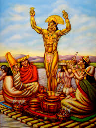

A lenda de El dorado trata-se de uma 'lenda'antiga indígena da época da colonização da América essa lenda atraiu muitos europeus, a lenda tratava-se de uma cidade feita completamente de ouro maçiço e puro.
Trata-se de uma lenda se iniciou nos anos de 1530 com a história de um cacique indígena da Colombia que se cobria com pó de ouro e mergulhava em um lago da região dos Andes e então esse indío decidiu construir uma cidade de ouro subterrânea. Porém como não poderia fazer isso sozinho, teve a ajuda de varios escravos a construir essa cidade, logo após a cidade ser construida esse homem de ouro ('como ele era nomeado') matou todos os escravos que o ajudaram a construir para que ninguém soubesse a localização exata de El dorado. Contudo o 'homem de ouro' deixou alguns enigmas a serem desvendados e procurados pelos exploradores para quem se aventurasse a tentar achar a cidade da riqueza.
